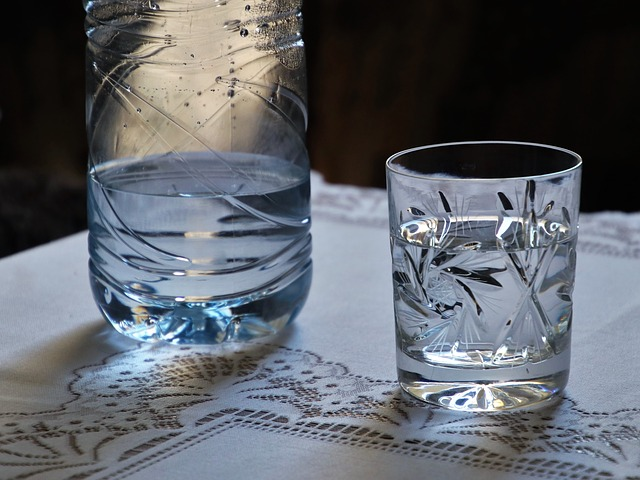

Sporcular İçin Sıvı Tüketiminin Önemi
Su Tüketimi
-Su, insan vücudu için vazgeçilmezdir. Kan hacmini korumak, vücut sıcaklığını düzenlemek ve kas kasılmalarının gerçekleşmesi için gereklidir. Egzersiz sırasında vücut, terleme yoluyla vücut ısını korur. Vücut sıvısının kaybı ile sonuçlanan damla damla terlerin deriden buharlaşmasıyla ısı vücuttan ayrılmış olur. Ter üretimi (ve bu nedenle sıvı kaybı) ortamın sıcaklığı ve nem oranıyla bağlantılı olarak arttığı gibi egzersiz yoğunluğu ile birlikte de artar. Yani egzersiz sırasındaki sıvı kaybı vücut sıcaklığının düzenlenmesinde çok önemlidir ve dehidrasyona (su kaybı) yol açabilir.
Egzersiz sırasında ter ile kaybedilen sıvıyı yerine koymak için sıvı tüketmek gereklidir. Ancak çoğu durumda ter kaybı oranları sıvı alımından daha fazla olabilir. Bu durum ise sıvı eksikliği ile sonuçlanır. Bu nedenle dehidrasyon ie ilgili olarak oluşan performans düşüklüklerini engellemek için sporculara daha fazla sıvı tüketmeleri önerilir. Ayrıca egzersiz sırasında da devamlı olarak sıvı tüketmek önemlidir. Ter oranınızı ve nasıl sıvı tüketmeniz gerektiğini bilmeniz gerekir. Bu konuda spor diyetisyenleri bireysel sıvı tüketim planı için yardım istenebilir.
-Egzersiz sırasında da sıvı tüketimi asla ihmal edilememelidir.
Vücuttaki kas miktarına bağlı olarak ağırlığın %55-70’ini su oluşturur. Egzersiz esnasında vücut sıvı dengesini koruyan sporcuların performansının da daha yüksek olduğu görülmüştür.
Vücuttan su kaybı(dehidrasyon) sporcunun performansını düşürebilir.
İyi bir hidrasyon sağlamak için, kişisel sıvı gereksinimlerinin bilinmesi gerekir.
Vücut sıvı dengesinin korunması için sporcuların egzersizden 2-3 saat önce 400-600 ml sıvı tüketmeleri; egzersiz başlangıcında ve sonrasında 15-20 dakikada bir 150-350 ml su içmeleri önerilir.
Tercih edilen sporcu içecekleri ise %4-8 oranında karbonhidrat içermelidir ve bu içecekler 1 saatin üzerindeki egzersizlerde tüketilmelidir.
Ter ile kaybolan sıvı miktarı normal bireylere göre daha fazladır.
Kaybolan suyun yerine konmasında hangi içeceklerin ne miktarda kullanılacağı iyi belirlenmelidir.